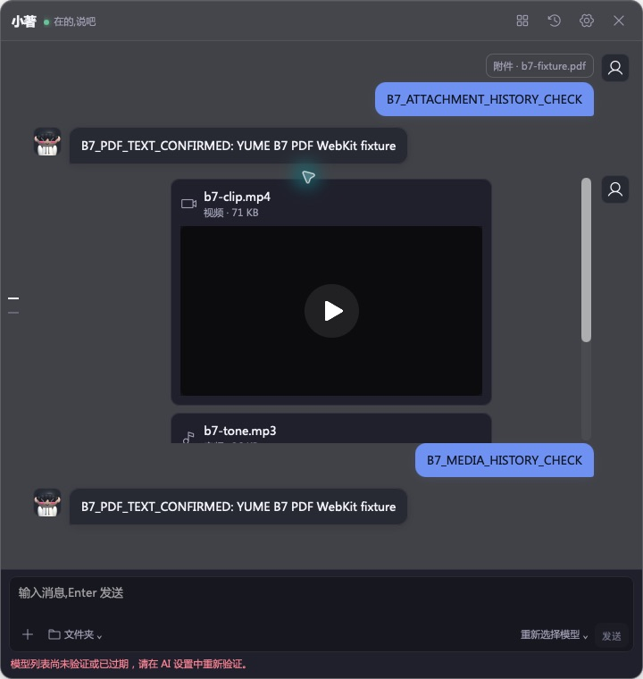
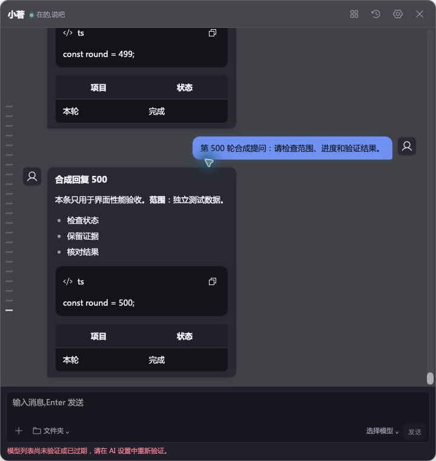

PDF 历史标签已恢复，导航提示已隐藏内部资源信息。新增三种媒体、64 MiB 原始上传和 1000 消息非流式交互实测。产品仍为 0.4.21，历史 schema 3 / 记忆 schema 4；未推送或发布。
完整说明与边界 · 结果 / 日志哈希 · 代码指纹 · 文件清单 · 上一轮 #01–20 矩阵
c00528e：从受作用域约束的原生快照恢复普通附件文件名，仅附件消息也保留。标签随加载结果返回，不增加逐消息请求，不持久化字节、URL 或路径。dea6d77：对话导航复用气泡的资源上下文过滤。两项修复均有回归与原生历史复核。
| 场景 | 观察结果 | 尚未覆盖 |
|---|---|---|
| PDF 历史 | 选择、提取、真实 OpenCode + 合成 provider 回复；重开和重启后文件名保留 | 复杂/损坏/截断 PDF 的重复循环与堆收敛 |
| WAV / MP3 / MP4 | 播放推进、暂停、DOM seek 成功；历史恢复媒体卡片 | 物理滑块拖动、完整编码矩阵 |
| 二进制上传 | 1 / 8 / 20 MiB 成功；20 MiB + 1 B 拒绝；64 MiB 媒体成功 | OS 拖入、重复峰值内存、原生 HTTP 206 回执 |
| 1000 消息 | 500 轮 Markdown 加载；输入和滚动各预热 5 次 + 30 次采样 | 50 Hz 流式、真实按键到显示、优化前后对照 |
上传单次观察 3 / 8 / 19 / 65 ms，仅为调用到宿主回复。交互测量为程序化 DOM input/scroll 到第二个 requestAnimationFrame；全部 1000 行仍挂载。不能据此宣称生产性能或跨平台达标。原始采样 · 上传回执及转录来源


检查器开启时上传曾触发 SIGTRAP，栈位于 WebKit Inspector JSON 序列化；原因未定。关闭检查器后的延迟探针完成，不能写成崩溃已修复。
重建后读取 QA 虚拟钥匙串条目阻塞；仅移除该测试条目后同一二进制恢复。直接 fetch 媒体 Range 被 CSP 拒绝，未放宽策略，随后改用实际媒体元素验证。
React Doctor 保留 1 条既有辅助函数导出提示；类型检查、前端/Rust 套件和构建通过。5 个 SQLite 库完整性均 ok；本次 QA 进程、端口、虚拟凭据及三个专属数据根已清理。
优先验证 1000 消息 + 50 Hz 流式 + 10k/50k 尾消息，覆盖终态、Stop、输入焦点和滚动；随后补 PDF 生命周期循环。Windows、GUI 权限/故障、完整存储删除、2D/3D、睡眠/高刷/DPI、GPU/功耗仍待验。